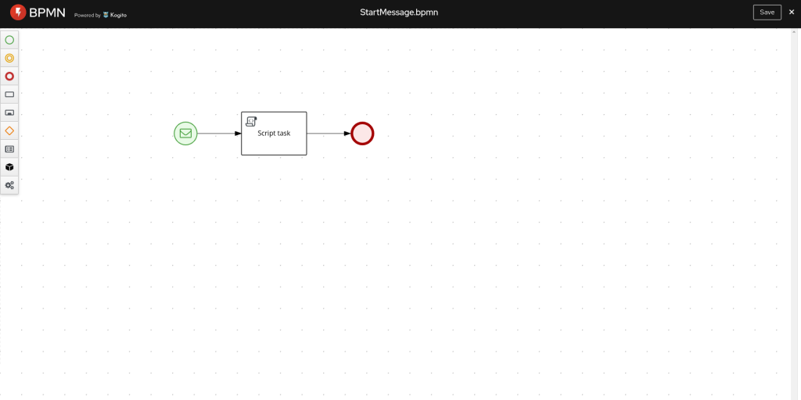
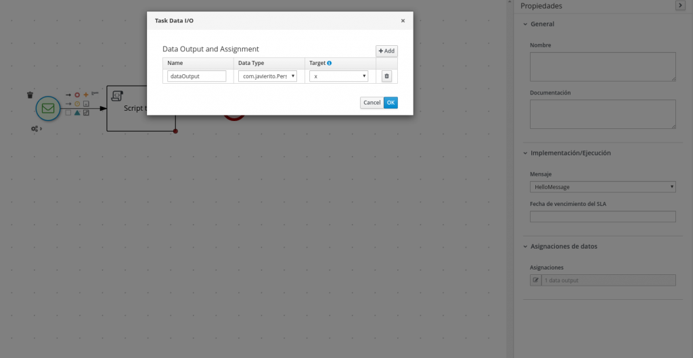
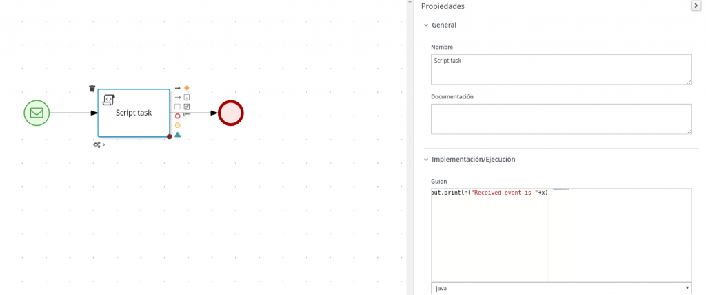
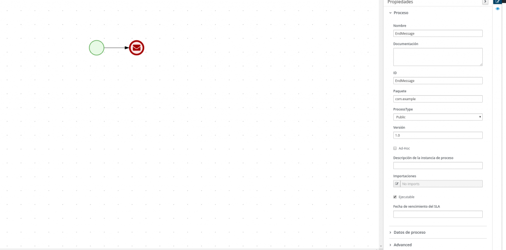
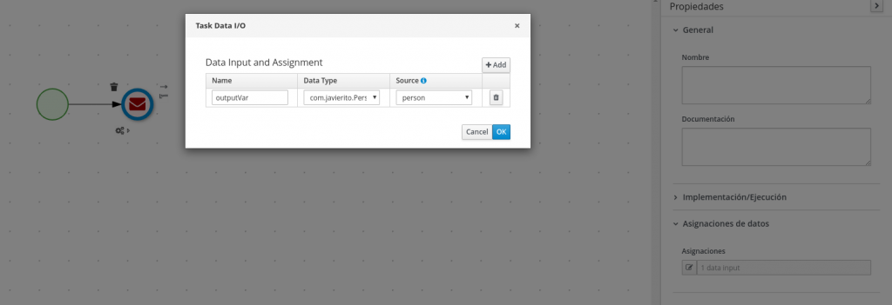

JBPM Messages and Kafka
When I was studying my degree, I recall a wise teacher that repeatedly told us, their beloved pupils, that the most difficult part of a document is the beginning, and I can assure you, dear reader, that he was right, because I cannot figure out a better way to start my first entry on a RedHat blog than explaining the title I have chosen for it. The title refers to two entities that in BPMN 7.48.x release has been brought together, hopefully for good: BPMN messages and Kafka.
According to the not always revered BPMN specification, messages “represents the content of a communication between two Participants”, or, as interpreted by JBPM, a message is an object (which in this context means a Java object, either a “primitive” one like Number or String, or an user defined POJO) that is either being received by a process (participant #1) from external world (participant #2) or, obeying the rules of symmetry, being sent from a process to the external world.
Kafka, not to be mistaken with the famous existentialist writer from Prague, is an “event streaming platform used by thousands of companies for high-performance data pipelines, streaming analytics, data integration, and mission-critical applications”. In more plain language, the middleware that is becoming the facto standard for inter process asynchronous communication in the software business applications world. If still not clear to you, try to think of Kafka as a modern replacement for your old JMS or equivalent message broker pal, but please do not tell anyone I have written that, because as Kafka designers proudly manifest, their fancy toy is doing so much more than that.
As other messaging brokers, Kafka uses a set of channels, called topics, to organize the data being processed. This data consist on a set of persistent records, each of them composed by an optional key and a meaningful value. Most Kafka use cases consist on reading and/or writing records from a set of topics and, as you will have guessed by now, JBPM is not the exception to that rule, so the purpose of this entry is to explain how KIE server sends and receives BPMN messages from and to Kafka broker.
With such spirit, let me briefly explain the functionality that has been implemented . When Kafka support for messages is enabled, for any KIE jar (remember, a KIE Jar contains a set of BPMN process and related artifacts needed to make them work) that is being deployed into a KIE server (because Kafka integration is a KIE server feature, not an JBPM engine one), if any of the process being deployed contains a message definition, depending on the nodes where that message is used, different interactions with Kafka broker will occur.
If the nodes using the message are Start, IntermediateCatch or Boundary events, a subscription to a Kafka topic will be attempted at deployment time. When a Kafka record containing a value with the expected format is received on that topic, the JBPM engine is notified and acts accordingly, so either a new process instance is started or already started processes are resumed (depending on the incumbent node being an Start or an Intermediate Catch respectively)
However, if the nodes using the message are End or IntermediateThrow events, then a process event listener is automatically registered at deployment time, so when a process instance, as part of its execution, reach one of these nodes, a Kafka record containing the message object will be published to a Kafka topic.
Examples
Once description of the functionality has been concluded, let’s illustrate how it really works with a couple of processes. In the first one, a process instance will be started by sending a message from a Kafka Broker. In the second one, a message object containing a POJO will be published into a Kafka Broker when the process is ended.
First example just consist of a start message event that receives the message object, an script task which prints that message object and the end node

The start event node, besides receiving the message named "HelloMessage", assigns the message object to a property named "x", of type com.javierito.Person. A person has a name and an age.

Scrip task just prints the content of "x" in console to verify the message has been correctly received using Java code (the output of toString method).

When this process is deployed to KIE server and Kafka extension is enabled, if we publish {"data":{"name":"Real Betis Balompie","age":113}} on Kafka topic "HelloMessage", then Received event is Person [name=Real Betis Balompie, age=113] is printed in KIE server console.
Second example diagram is even more straightforward than the previous one, it just contains two nodes: start and end message event

In order to fill the message object to be sent, an input assignment is defined to set message object value from property "person", of type com.javierito.Person

And that’s all, when an instance of this process is executed, passing as "person" property a Person instance which name is Real Betis Balompie and age is 113, a cloud event json object {.... "data":{"name":"Real Betis Balompie", "age":113},"type":"com.javierito.Person" ...} is sent to Kafka topic "personMessage"
Hopefully these two simple examples will give you a basic idea of what kind of functionality can be achieved when integrating BPMN messages with Kafka. In next section, you can find a FAQ where certain technical details are discussed
FAQ
- How is Kafka functionality enabled? Kafka functionality is provided at Kie server level. As an optional feature, it is disabled by default and it is implemented using an already existing functionality called Kie Server extension. In order to enable it:
- For EAP deployments, set system property
org.kie.kafka.server.ext.disabledtofalse - In Spring Boot applications, add
kieserver.kafka.enabled=trueto application properties.
- For EAP deployments, set system property
- Why Kafka functionality was not included as part of JBPM engine? Because JBPM engine must not have dependencies with external processes. Kafka broker, as sophisticated as it is, consists on at least one (typically more) external process, which due to its distributed nature relies on Zookeeper, which gives a minimum of two external processes.
- How BPMN knows which Kafka topics should be used? In a nutshell, using message name. More specifically, if no additional configuration is provided, the message name will be assumed to be the topic name. In order to provide a different mapping, system properties must be used for now ( an ongoing discussion regarding the possibility of providing mapping between message and topic in the process itself is happening while I wrote these lines) . The format of these system properties is
org.kie.server.jbpm-kafka.ext.topics.<messageName>=<topicName>. So, if you want to map message name “RealBetisBalompie” to topic name “BestFootballClubEver”, you will need to add following system property to Kie Server:org.kie.server.jbpm-kafka.ext.RealBetisBalompie=BestFootballClubEver. - Why a
WorkItemHandlerNotFoundExceptionis getting thrown in my environment when the message node is executed? JBPM has been out for a while and any new functionality needs to keep backward compatibility. Before this feature for Kafka was added to JBPM, when a process sends a message, aWorkItemnamed “Send Task” is executed. This behavior is still active, which means that in order to avoid the exception, aWorkItemHandlerimplementation for “send task” needs to be registered . The steps to register a work item handler are described here. If just Kafka functionality is needed, this handler might be a custom one that does nothing (implemented methods will be empty). Keeping this legacy functionality allows both JMS (through registering the proper JMS WorkItemHandler) and Kafka (through enabling the Kie extension) to naturally coexist in the same KIE server instance. ***UPDATE*** Since jBPM 7.54.0, a defaultWorkItemHandlerfor “Send Task” is automatically registered when Kafka extension is activated, so users do not longer have to do that in order to avoid this exception. - Which is the expected format for Kafka record value to be consumed by JBPM? Currently, JBPM expects a JSON object that honors cloud event specification (although only “data” field is currently used) and which “data” field contains a JSON object that can be mapped to the Java object optionally defined in
structureRefattribute ofMessageDefinition. If no such object is defined the java object generated from “data” field will be a java.util.Map. If there is any problem during the parsing procedure, the Kafka record will be ignored. In future we are planning to support also plain JSON objects (not embedded in “data” field) and customer customization of the parsing procedure (so value can contain any format and customer will be able to write custom code that converts its bytes to the java object defined in structureRef)